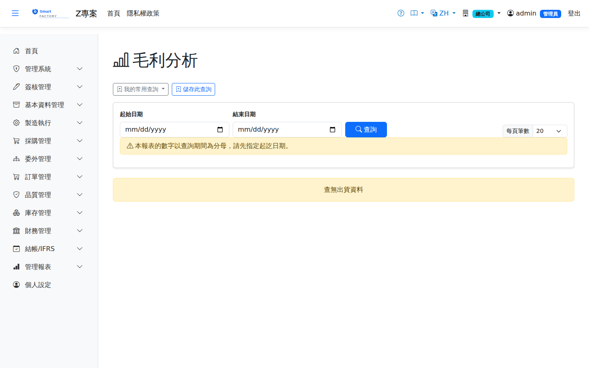

毛利分析Gross Margin Analysis
路由：/GrossMargin | 整體毛利與趨勢Route: /GrossMargin | Overall gross margin and trend
以出貨收入對銷貨成本計算期間毛利與毛利率趨勢，為獲利健檢的第一層視角。Works out the gross margin and margin rate trend for the period from shipment revenue against cost of goods sold, the first view in any profitability check.

毛利分析畫面截圖（示意，實際欄位/資料依權限與查詢條件而異）Margin analysis screenshot (illustrative; actual fields and data vary by permission and query criteria)
查詢Search
1
查詢列輸入條件後點「查詢」；欄位標題可點擊排序，清單下方有分頁導航。Enter your criteria on the query bar and click "Search"; column headers can be clicked to sort, and the paging controls sit below the list.
已作廢的出貨，營收與成本都不計。Voided shipments are excluded from both revenue and cost.
欄位說明Field reference
查詢條件Query criteria
| 條件Condition | 說明Guide |
|---|---|
| 起始日期 / 結束日期Date from / Date to | 必填Required 納入統計的出貨日期區間，不可留白（留白時畫面會直接說明，不會靜默回空報表）The shipment date range included; it cannot be left blank — leaving it blank now says so on screen instead of silently returning an empty report |
報表欄位Report fields
| 欄位Field | 說明Guide |
|---|---|
| 品號Item | 銷售的料件Item sold |
| 出貨金額Shipment amount | 區間內該品號的銷貨收入合計Total sales revenue for the item in the period |
| 銷貨成本Cost of goods sold | 對應的出庫成本合計（依出庫當時凍結的 AVCO 計算）Total matching issue cost (at the AVCO frozen when the stock was issued) |
| 毛利Gross Profit | 出貨金額 － 銷貨成本Shipment amount − cost of goods sold |
| 毛利率Margin rate | 毛利 ÷ 出貨金額；負值代表賠本銷售，應檢視售價或成本異常Gross margin ÷ shipment amount; a negative figure means the sale lost money and the price or the cost needs looking at |
| 出貨次數Ship Count | 涉及的出貨明細筆數Number of shipment lines involved |